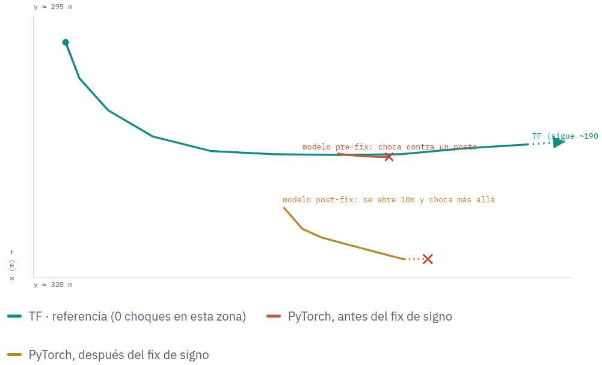

PilotNet PyTorch vs TensorFlow: Root Cause Resolved — The Model Now Drives on Par with the Reference
September 22, 2026
Overview
This week closes the diagnostic investigation opened in Week 42. The PyTorch PilotNet implementation, which had consistently underperformed the TensorFlow reference model when driving in the unseen Town02 map, now drives on par with TF. The problem was not a curve-steering deficiency, as initially believed, but a constant lateral drift caused by one specific component of the training augmentation. Removing it resolved the drift, halved the validation loss, and produced two models that drive correctly in the new map. The remaining limitations — difficulty in open plazas — are shared with the TF reference and are therefore not a PyTorch-specific defect.
📌 Context
- Goal: A PyTorch PilotNet, trained on Town01+Town04, that generalizes to Town02 as well as the pre-existing TF reference model.
- Confirmed result: Two retrained models, with one augmentation component disabled, drive well in Town02 — essentially matching TF performance.
- Current phase: Scaling to 39 datasets trained in parallel on the available GPU.
The Problem: A Silent, Constant Drift
For weeks, the PyTorch model underperformed the TF reference. The initial symptom looked like a steering problem in curves, but a closer look revealed something different and more fundamental.
⚠️ What Was Actually Happening
On any straight stretch of the map, the car slowly drifted toward the lane divider — linearly, steadily, from the very first frame. It was not misreading a curve: it was failing to correct a lateral deviation once it started. This behavior was confirmed at random spawn points across the entire map, ruling out a geometry issue of any specific zone.
The decisive test was feeding the model a completely uniform gray image — no road, no lines, no directional information. The model still predicted a constant steering value, almost identical to the network's own bias term. The drift did not depend on what the camera saw: it was baked into the model itself.

The Cause: One Augmentation Component Taught the Wrong Lesson
Training an imitation-learning model relies on synthetic examples that teach it to recover from being off-center. One of those examples — the horizontal flip — turned out to be the culprit.
📌 Why the Flip Is Wrong for This Task
Horizontal flip is a standard augmentation in computer vision, but driving on the right and on the left are not interchangeable in this domain: all CARLA maps use right-hand traffic. Inverting a real image and negating the steering produces a scene that is geometrically consistent but never occurs in the simulator. The model was learning from examples that correspond to no real street.
✅ Fix Applied
The horizontal flip was disabled in the training augmentation, with everything else unchanged — same dataset, same loss weighting, same architecture.
The Result: Driving on Par with TensorFlow
✅ Resolved — Confirmed in Real Driving
With the flip disabled, the validation loss dropped by half and, in real CARLA driving on two distinct datasets, the car stopped drifting and drove on par with the TF reference — something no other change in the entire investigation had achieved. The models that previously crashed at 56 m now complete the route.
The limitation that remains — difficulty in open plazas — is shared with the TF reference model and is therefore a known, inherent limitation of the approach, not a PyTorch-specific defect.
Additional Findings Along the Way
The investigation also uncovered several issues that, while not the root cause, were misleading the diagnosis and have now been corrected:
- The wrong architecture was silently training. A duplicate file in the import path caused every training run to use an outdated version of the model, without any error or warning.
- A translation augmentation moved the image in the opposite direction to the reference. A library convention difference inverted the sign of the recovery correction in a fraction of training frames, reinforcing drift instead of correcting it. Fixing it improved tight-curve behavior by ~19%.
- Three instrumentation bugs in the driving drivers. A single crash was counted up to 61 times, the cross-track error was hidden precisely when it mattered most, and the third-person camera was disabled by default. None affected the model, but all made the diagnostic data misleading.
- Offline metrics did not predict driving. Frame-to-frame prediction error ranked TF as worse than PyTorch, yet TF drove seven times farther in real conditions. Closed-loop behavior had to be measured directly.
Scale-Up: 39 Datasets in Parallel
🔄 Current Phase
With the root cause resolved, a parallel training pipeline was built. All 39 datasets under datasets/Trained/ are now training with the fix applied, leveraging the available GPU and CPU cores. Each run is launched as an independent process with its own logs, up to a configurable number of concurrent jobs.
Current Status and Next Steps
| Item | Status |
|---|---|
| Correct architecture actually running | ✅ Done |
| Translation sign bug corrected | ✅ Done |
| Driving drivers instrumented and corrected | ✅ Done |
| Constant lateral drift identified and resolved | ✅ Done |
| Confirmed with real driving on two datasets | ✅ Done |
| Complete the sweep of 39 datasets | 🔄 In Progress |
| Validate real driving on a representative sample of the sweep | ❌ Pending |
| Network-level explanation of why the flip caused the drift | ❌ Open |
📌 WEEK 43 SUMMARY – SEPTEMBER 22, 2026
🎯 Objective: Close the diagnostic investigation into why the PyTorch PilotNet underperformed the TF reference in Town02, confirm the fix in real driving, and begin scaling training.
🧪 Methodologies: Real CARLA closed-loop driving with position logging; synthetic-image probing to isolate model bias from image content; parallel training orchestration.
📈 Key Finding: The constant lateral drift was caused by the horizontal flip in the training augmentation — a domain-specific component that produces scenes never occurring in right-hand-traffic CARLA maps. Disabling it eliminated the drift and halved the validation loss.
✅ Achievements: The PyTorch model now drives on par with the TF reference, confirmed on two datasets. The remaining limitation (open plazas) is shared with TF and is not PyTorch-specific. Scale-up to 39 datasets initiated in parallel.
❌ Limitations: The network-level mechanism by which the flip caused the bias remains without a fully closed explanation. The 39-dataset sweep is still running; only a representative sample has been validated in real driving so far.
🔜 Next Steps: Complete the 39-dataset sweep; validate real driving on a representative sample; document the remaining open question on the flip mechanism.